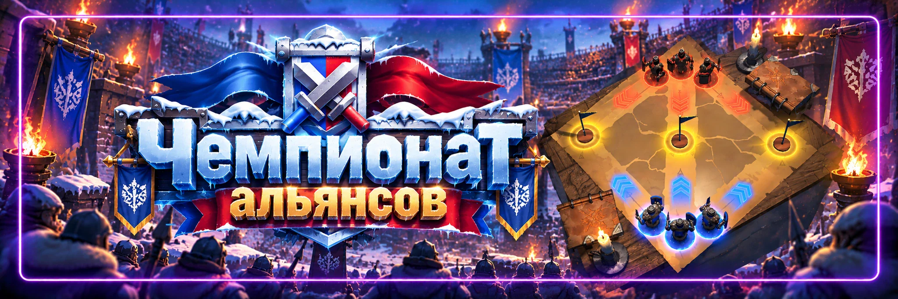
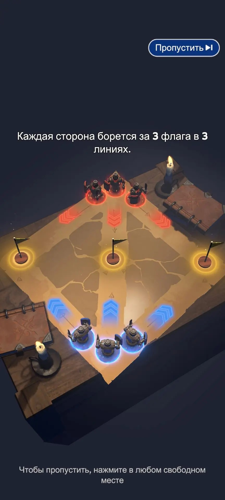

Чемпионат альянса
Автор: SOVA58
Чемпионат альянса — автоматическое командное соревнование, в котором альянсы выставляют заранее зарегистрированные боевые отряды. В каждом раунде есть 3 линии, а для победы достаточно выиграть 2 из 3. Поэтому здесь важна не только сила участников, но и то, как эта сила распределена между линиями.
УСЛОВИЯ УЧАСТИЯ
Для участия игроку необходима:
Топка 10 уровня или выше.
Также необходимо иметь подходящий ранг внутри альянса.
Чтобы сам альянс смог участвовать в Чемпионате, должно зарегистрироваться минимум:
10 участников.
Если регистраций меньше, альянс не допускается к соревнованию.
КАК ПРОХОДИТ ЧЕМПИОНАТ
В одной группе соревнуются 6 альянсов.
Они проводят 5 раундов.
В каждом раунде ваш альянс встречается с одним противником.
Бои проходят автоматически — после начала сражения обычному участнику ничего нажимать не нужно.
Основная работа игрока происходит до боя, во время регистрации.
Основная работа R4/R5 — во время подготовки и распределения линий.
ЧТО ДЕЛАТЬ УЧАСТНИКУ
Во время регистрации необходимо сохранить один боевой отряд.
Используйте:
- сильнейших боевых героев;
- войска максимально доступного вам уровня;
- полный отряд;
- состав, предназначенный именно для PvP-боя.
Не регистрируйте случайный поход только потому, что он уже выбран в окне отправки.
СИЛА ОТРЯДА
В Чемпионате используется собственный показатель силы зарегистрированного отряда.
Он зависит в том числе от:
- силы героев;
- уровня войск;
- состава зарегистрированного отряда.
Поэтому обычная общая мощь вашего аккаунта не показывает точно, насколько сильным будет ваш отряд в Чемпионате.
Ориентируйтесь прежде всего на показатель, который показывает сам интерфейс Чемпионата альянса.
ПРОВЕРЬТЕ ОТРЯД ДО РЕГИСТРАЦИИ
Перед сохранением:
герои → войска → количество → состав → показатель силы → регистрация.
Не спешите нажимать регистрацию.
Если уже сохранён хороший сильный отряд, не перезаписывайте его случайно более слабым составом.
СОСТАВ ВОЙСК
Один из распространённых вариантов:
50% пехоты / 20% копейщиков / 30% стрелков
Но это не обязательная формула.
Лучший состав может меняться в зависимости от:
- ваших героев;
- характеристик войск;
- уровня развития;
- текущих усилений;
- противника.
Поэтому для 58 государства используем 50/20/30 только как стартовый ориентир и сравниваем реальные результаты.
Не используйте более слабые войска только ради того, чтобы получить красивое соотношение процентов.
КАК РАБОТАЮТ 3 ЛИНИИ

Каждая линия вашего альянса сражается только с соответствующей линией противника.
Левая против левой.
Центральная против центральной.
Правая против правой.
Чтобы выиграть весь раунд, достаточно результата:
2 : 1
Поэтому выиграть одну линию с огромным запасом недостаточно.
В КАЖДОЙ ЛИНИИ ВАЖНЫ ТОП-20
В бою участвуют 20 сильнейших зарегистрированных отрядов каждой линии.
Если в линии зарегистрировано больше игроков, само количество дополнительных слабых отрядов ещё не делает её сильнее.
Поэтому R4/R5 нужно смотреть не только на самого сильного игрока.
Важно оценивать всю глубину:
№1 → №5 → №10 → №15 → №20
Иногда линия с одним очень сильным игроком оказывается слабее линии, где все двадцать участников достаточно сильные.
ОДИН СИЛЬНЫЙ ИГРОК НЕ ВЫИГРАЕТ ЛИНИЮ ОДИН
Один зарегистрированный отряд может провести максимум 2 боя за один раунд.
После этого он больше не продолжает бой в этой линии.
Поэтому даже самый сильный игрок не сможет уничтожить двадцать противников самостоятельно.
Нужна глубина линии.
ПОРЯДОК БОЁВ
Более слабые зарегистрированные отряды выходят раньше.
Более сильные располагаются ближе к концу линии.
Поэтому особенно важно, чтобы в конце линии оставались сильные игроки, способные закончить бой против сильнейших участников соперника.
ТАКТИКА ДЛЯ R4/R5
Одна из самых распространённых стратегий:
2 сильные линии + 1 более слабая.
Логика простая:
для победы нужны только 2 линии из 3.
Но это не единственная рабочая стратегия.
Противник тоже может изучать ваши предыдущие раунды и менять расположение игроков.
Иногда выгоднее использовать:
3 относительно равные линии
или изменить две приоритетные линии перед конкретным противником.
Поэтому не нужно автоматически ставить одни и те же линии каждую неделю.
ИЗУЧАЙТЕ СОПЕРНИКА
После предыдущих раундов можно анализировать, как противник распределял своих участников.
Смотрите:
- какие линии были сильнее;
- где стояли самые сильные игроки;
- насколько глубокой была каждая линия;
- менял ли противник расположение между раундами.
После этого R4/R5 могут изменить своё распределение.
Чемпионат — это не только сила, но и небольшая шахматная доска из трёх полос.
МЕНЯЙТЕ ЛИНИИ
R4/R5 могут перераспределять зарегистрированных участников между линиями во время соответствующей фазы подготовки.
Поэтому участнику важнее всего:
зарегистрировать максимально хороший отряд.
А окончательное расположение игроков руководство альянса сможет настроить перед боями.
KO-НАГРАДЫ
Участник может получать дополнительные награды за личные победы.
Если ваш отряд победил:
1 противника — доступна KO-награда 1-го уровня.
2 противников — KO-награда 2-го уровня.
Поскольку один отряд может выиграть максимум два боя за раунд, это также соответствует максимальному уровню KO-награды за такой бой.
СЛЕДИТЕ ЗА ТАЙМЕРОМ
Не ориентируйтесь на старые таблицы с точными днями и часами регистрации.
В 2026 году расписание Чемпионата уже менялось.
Поэтому для 58 государства всегда используем текущий таймер и расписание непосредственно в игровом интерфейсе.
ЧТО ДЕЛАТЬ УЧАСТНИКУ
- Зарегистрироваться вовремя.
- Поставить сильнейших PvP-героев.
- Использовать лучшие доступные войска.
- Заполнить отряд полностью.
- Проверить состав перед сохранением.
- Сравнить итоговый показатель силы.
- Не перезаписывать хороший отряд слабым.
- Следить за указаниями R4/R5.
ЧТО ДЕЛАТЬ R4/R5
- Добрать минимум 10 регистраций.
- Проверить, кто зарегистрировал слабый или неправильный состав.
- Смотреть топ-20 каждой линии.
- Не складывать всю силу в одну линию.
- Выбрать две приоритетные линии или другую подходящую схему.
- Изучать предыдущие бои следующего соперника.
- Менять распределение между раундами при необходимости.
ЧАСТЫЕ ОШИБКИ
- Регистрировать случайных героев.
- Использовать слабые войска ради точного соотношения 50/20/30.
- Не заполнять отряд полностью.
- Перезаписать сильную регистрацию более слабой.
- Смотреть только на общую мощь аккаунта.
- Считать 50/20/30 единственно правильным составом.
- Сложить всех сильнейших игроков в одну линию.
- Считать стратегию «две сильные линии» обязательной против любого соперника.
- Смотреть только на №1 противника и забывать про остальных игроков топ-20.
- Никогда не менять расположение линий.
- Игнорировать предыдущие результаты соперника.
Регистрируем лучший боевой отряд.
В каждом раунде есть 3 линии.
Для победы нужны 2 линии из 3.
В бою важны топ-20 каждой линии.
Один отряд может провести максимум 2 боя.
Смотрим именно на показатель силы Чемпионата.
50/20/30 — ориентир, а не закон.
R4/R5 изучают соперника и при необходимости меняют линии.
Главный принцип:
не просто собрать как можно больше силы, а поставить нужную силу в нужную линию.